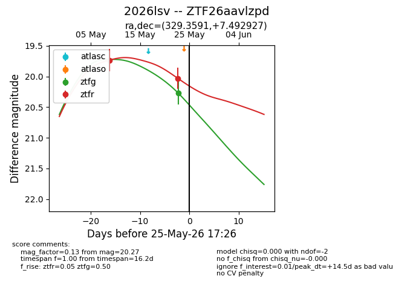
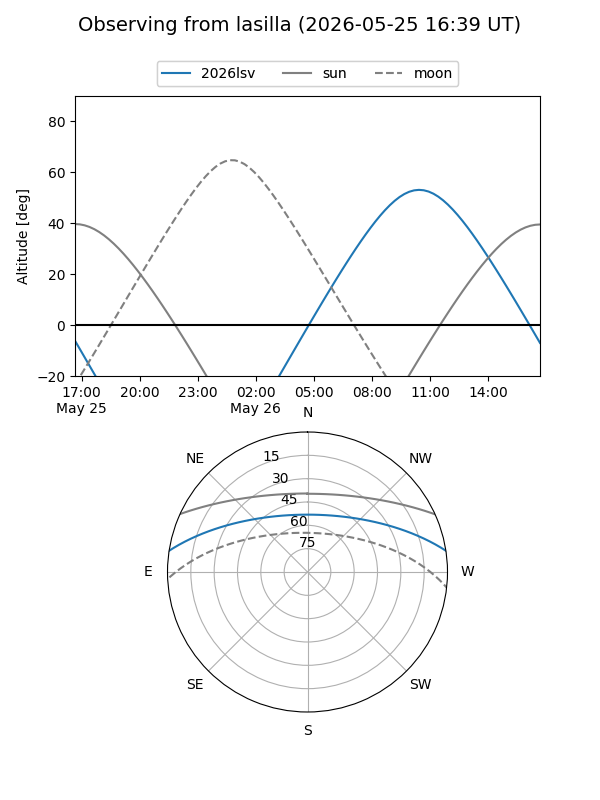
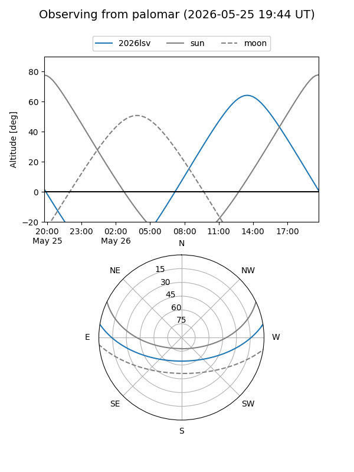
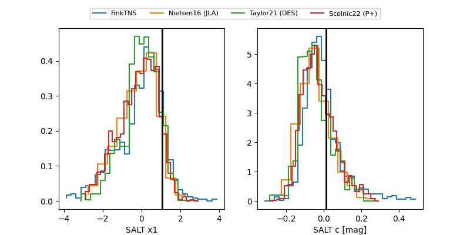

2026lsv
Target 2026lsv at 2026-05-25 17:28
Aliases and brokers:
lsst-FINK: link
lsst-Lasair: link
lsst-ALeRCE: link
ztf-FINK: link
ztf-Lasair: link
ztf-ALeRCE: link
TNS: link
YSE: link
alt names
ZTF26aavlzpd (ztf,fink_ztf)
2026lsv (tns,yse)
Coordinates:
equatorial (ra, dec) = 329.3591,+7.49293
equatorial (HMS+DMS) = 21:57:26.19,+07:29:34.54
galactic (l, b) = (65.9781,-35.49248)
Flags:
Photometry:
last ztfg=20.27, ztfr=20.03
1 ztfg, 2 ztfr detections
Lightcurve

Visibility


Additional plots
